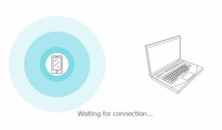
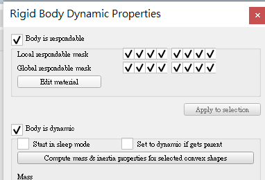
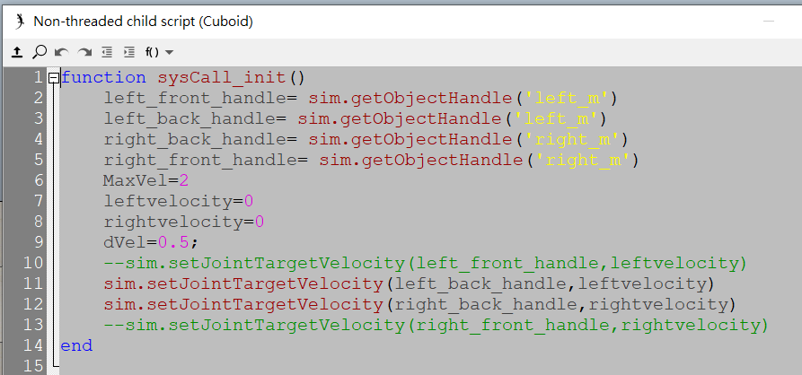

week1-5 <<
Previous Next >> week10-14
week6-9
week6
w6直播進程:
分工內容:
topic0:
40723237
40723221
40723222
40723228
40723243
40723244
40723236
40623117
topic1:
40723221
40723222
40623252
40523253
40723249
40732331
40723240
40723237
直播進程影片:
4輪車參考影片:
v-rep檔案:car easy setting for motor and model
四輪車馬達驅動設定影片:
V-REP tutorial 影片:
將手機用做攝像頭
ivcam:https://www.e2esoft.com/ivcam/

obs:https://obsproject.com/

藉由obs之串流功能或者錄影功能即可使用錄影的方式進行線上教學及操作，若需要錄製操作者的臉或者是展示現場操作之步驟及方式亦可以使用ivcam對手機進行連結，並截油ivcam之功能達到與攝像頭相對應的功能。
ivcam設定方式:
1.安裝並且執行ivcam(手機電腦都需要安裝)

2.連接後到obs去設定攝像頭

3.結束後即可開始使用手機攝像頭
obs和youtube串流教學可以參考:https://bearteach.com/bearman/3919
week7
四輪車馬達設定及鍵盤控制加速及轉彎
v-rep檔案:four wheel car setting to contorl turn right or left
1.將上面已經能夠直線運行的四輪車給導入v-rep，導入後左方工作列因該會呈現下方的樣態。

2.接下來我們回顧一下之前馬達設定的地方，我們必須要把電機開啟(點擊子視窗下的show dynamic properties dialog，可以藉由勾選motor properties以啟動馬達，並可以藉由調整轉動速度和力矩達到所想要馬達轉動之效果，底下的lock motor when target velocity is zero則可以使馬達速度為零時鎖定住馬達)。

3.物件的動力學設定也必須要設定好，如下方所示物體的碰撞和物體的動態都必須打開，才能使剛剛設定好的馬達進行對輪胎的帶動。

4.貼上撰寫好的鍵盤控制轉彎程式。

操作影片:
轉彎程式碼:
function sysCall_init()
left_front_handle= sim.getObjectHandle('left_m')
left_back_handle= sim.getObjectHandle('left_m')
right_back_handle= sim.getObjectHandle('right_m')
right_front_handle= sim.getObjectHandle('right_m')
MaxVel=2
leftvelocity=0
rightvelocity=0
dVel=0.5;
--sim.setJointTargetVelocity(left_front_handle,leftvelocity)
sim.setJointTargetVelocity(left_back_handle,leftvelocity)
sim.setJointTargetVelocity(right_back_handle,rightvelocity)
--sim.setJointTargetVelocity(right_front_handle,rightvelocity)
end
function sysCall_actuation()
message,auxiliaryData=sim.getSimulatorMessage()
while message~=-1 do
if (message==sim.message_keypress) then
if (auxiliaryData[1]==32) then
-- right key
leftvelocity=0
rightvelocity=0
sim.setJointForce(left_front_handle, 0)
sim.setJointForce(left_back_handle, 0)
sim.setJointForce(right_back_handle, 0)
sim.setJointForce(right_front_handle, 0)
break
else
--sim.setJointForce(left_front_handle, 10000)
sim.setJointForce(left_back_handle, 10000)
sim.setJointForce(right_back_handle, 10000)
--sim.setJointForce(right_front_handle, 10000)
end
if (auxiliaryData[1]==2007) then
-- up key
leftvelocity=(leftvelocity+rightvelocity)/2
rightvelocity=leftvelocity
leftvelocity=leftvelocity+dVel
rightvelocity=rightvelocity+dVel
end
if (auxiliaryData[1]==2008) then
-- down key
leftvelocity=(leftvelocity+rightvelocity)/2
rightvelocity=leftvelocity
leftvelocity=leftvelocity-dVel
rightvelocity=rightvelocity-dVel
end
if (auxiliaryData[1]==2009) then
-- left key
leftvelocity=leftvelocity-dVel
rightvelocity=rightvelocity+dVel
end
if (auxiliaryData[1]==2010) then
-- right key
leftvelocity=leftvelocity+dVel
rightvelocity=rightvelocity-dVel
end
end
message,auxiliaryData=sim.getSimulatorMessage()
end
if leftvelocity>MaxVel then
leftvelocity=MaxVel
end
if leftvelocity<-maxvel then="" leftvelocity="-MaxVel" end="" if="" rightvelocity="">MaxVel then
rightvelocity=MaxVel
end
--sim.setJointTargetVelocity(left_front_handle,leftvelocity)
sim.setJointTargetVelocity(left_back_handle,leftvelocity)
sim.setJointTargetVelocity(right_back_handle,rightvelocity)
--sim.setJointTargetVelocity(right_front_handle,rightvelocity)
end
結論:
在這邊我們已經通過了前面的馬達設定、動力學設定、v-rep內部簡易物件組立完成了一輛能夠直行的四輪車，在這邊我們更透過指令碼的方式增加了四輪車可以通過鍵盤達成左轉右轉及向前加速和減速的功能，雖然依舊會有輪胎打滑的問題存在，但是通過之後藉由機構之設計及模擬因該能夠解決此一問題。
week8
安裝以下三個模組
1.pip install opencv-python
2.pip install imutils
3.pip install numpy
安裝完成後會有一下反應:
解決leo的bug將leo更新至將leo更新至6.2.1版本
1.先卸載原先版本之leo利用uninstall
pip uninstall
2.安裝leo的6.2.1指定版本置系統中並且測試是否可以使用
pip install leo==6.2.1
第8周抽查影片:
更新v-rep至coppeliaSim版本:
下載位置:https://www.coppeliarobotics.com/downloads
可攜版本:CoppeliaSim Edu, Binaries
可直接執行版本:CoppeliaSim Edu, Installer
下載edu教育版本(下圖所示)
week1-5 <<
Previous Next >> week10-14